データのインポート
Import-Data
- 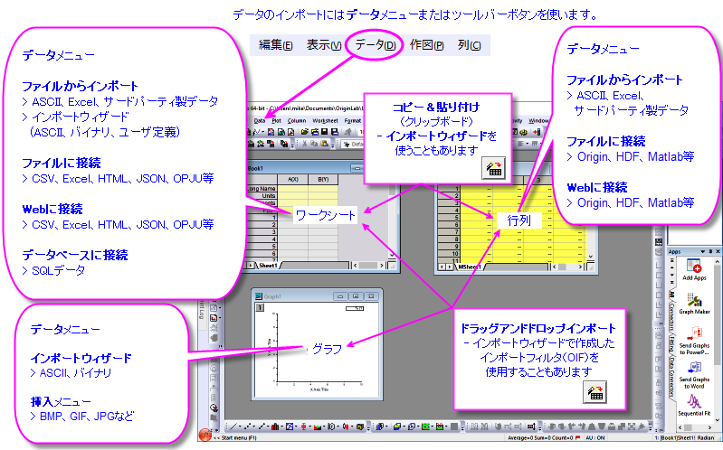
Origin 2019bでデータコネクタと呼ばれる新しいデータインポートの仕組みが追加されました。名前の通り、データコネクタはプロジェクトと外部のソースファイルの間にリンクを作成します。ソースファイルはローカルにあっても、会社のネットワーク上にあってもかまいません。Webサーバ上に置くこともできます。データコネクタは、プロジェクトを保存時にインポートデータを含まずに保存するオプション（ファイルサイズを軽くし、ソースデータへのリンクを維持）と、偶発的な変更または削除操作からデータを保護するオプションをサポートします。データコネクタは、HTMLテーブルやJavaScript Object Notation (JSON)データなど、これまで利用できなかったデータソースのインポートをサポートします。 データコネクタは、ドラッグアンドドロップとプロジェクトオープン時の自動インポートをサポートします。さらに、OriginLabでは新しいデータ形式への対応を進めています。たとえば、Origin 2021bでは、National Instruments TDMSおよびNetCDFファイル用のコネクタが改善されました。 さらに、新しいThermo Fisher Scientific MSRawFileコネクタを追加しました。
その他のサポートされているインポート方法：
- OriginLabは、ASCII、CSV、Excel、バイナリファイル、およびMATLAB、pClamp、NI TDM、NetCDFを含む多くのサードパーティ形式向けの、OriginのXファンクション+フィルターベース ルーチンを引き続きサポートしています。これまで使用してきたインポートフィルタやテーマがある場合は、問題なく機能します。
- コピー＆ペーストで、単純に構造化されたデータをすばやくインポートできます（主にワークシートにデータを素早く追加するのに役立ちます）。
- 複雑なASCII、バイナリ、またはユーザ定義のファイルタイプの場合、インポートウィザードのわかりやすいインターフェイスを使用してファイル内容を確認しながらインポートできます。インポート設定はフィルタファイルとして保存できます。インポートウィザードは、ファイルメタデータを変数に保存したり、データ処理やインポートのためにカスタムOrigin C関数を使用したりするなどの強力な機能をサポートしています。
- SQLデータベースで作業したい場合、OriginのデータベースコネクタおよびSQLエディタを使って接続文字列やSQLクエリを作成できます。
アップグレードユーザ向け情報
以前のバージョンでは、ファイルメニューにあったインポートルーチンが、最近のバージョンではデータメニューに移動していることに注意してください。Originの最新のデータインポートツールであるデータコネクタがあります。
- 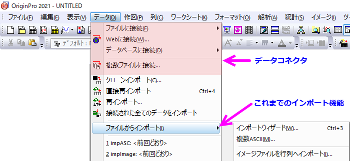
データコネクタ
- 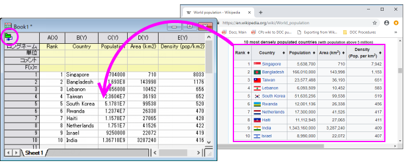
データコネクタは、ローカルまたはwebベースのファイルやページからOriginプロジェクトにデータをインポートするための一般的なメカニズムです。データコネクタは、主に2つのデフォルト（変更可能な）の古いOriginのインポート方法とは異なります。
- コネクタを介してインポートされたデータは編集がロックされています。これにより、データの整合性が確保されます。
- コネクタを介してインポートされたデータは、プロジェクトとともに保存されません。これにより、プロジェクトファイルを小さくすることが可能です。
データコネクタは多数の一般的なデータフォーマットをサポートしています。
- Text/CSV
- Excel
- Originファイル（プロジェクト、ワークブック、行列）
- MATLAB
- JavaScript Object Notation (JSON)
- HDFファイル
- TDMSファイル
- HTML表
- インポートフィルタ（データコネクタの仕組みでカスタムインポートフィルタを使用）
- シェープファイル（Shapefile）
- NetCDF
- XML
 | SQLデータベースに接続するには、データベースを参照してください。
|
データコネクタでデータをインポートする方法
- ワークブックをアクティブにして、データメニューをクリックします。
- ローカルまたはネットワークファイルに接続する場合、ファイルに接続をクリックしてファイルタイプを選択します。
- 複数ファイルに接続するには、複数ファイルに接続を選択します。
- Webデータに接続する場合、Webに接続を選択してURLを入力します。
データコネクタについて知っておくべきこと
- インポートデータのファイルサイズが500kBを超える場合、インポートされたデータとそのデータから作成されたグラフは、デフォルトでOriginファイルとともに保存されません（LabTalkシステム変数@FSEを参照）。インポートされたデータに起因するすべての分析出力はOriginファイルと一緒に保存されます。プロジェクトファイルと一緒に生データを保存しないと、ファイルサイズが大幅に削減され、サイズの大きいプロジェクトを操作するときのパフォーマンスが向上します。
- 重要：デフォルトでは、コネクタでインポートされたデータ(>500kB)はプロジェクトファイルと一緒に保存されないため、ユーザーはインポートされたデータを保存する必要があるかどうかを常に確認する必要があります。これは、データソースがWebベースであり、制御できない場所に保存されている場合に問題になることがあります。データコネクタ経由でインポートした全データをOriginファイルと一緒に保存したい場合は、データコネクタアイコンをクリックし、保存時にインポートデータを除外†の横のチェックマークを外します。各データコネクタを含むブックには、それぞれ独自の除外...チェックマークが付きます。あるいは、データコネクタが必要でないと判断した場合、データコネクタアイコンをクリックしてデータコネクタを削除（このブックから）または、全てのブックからコネクタを削除（プロジェクト内）を選択します。
- ワークシートの左上隅にあるデータコネクタアイコン（または
 )をクリックしてインポート (Ctrl+4) またはすべてインポートを選択すると、いつでもデータを再インポートできます。
)をクリックしてインポート (Ctrl+4) またはすべてインポートを選択すると、いつでもデータを再インポートできます。
- デフォルトでは、データコネクタ経由でインポートされたデータは編集できません。グラフ作成や分析をすることはできますが、変更することはできません。これにより、誤って変更することを防ぐことができますが、制限が厳しすぎると感じる場合もあります。コネクタアイコンをクリックし、インポートされたデータを解除を選択することにより、接続されたデータのロック解除できます。コネクタインポートデータから編集制限を削除する方法については、このFAQを参照してください。
- ワークブックに接続できるコネクタのタイプは1つのみです（例：Text/CSV）。Text / CSVなどの単純な構造のファイルの場合、同じコネクタを共有している限り、それぞれが別々のファイルに接続する複数のシートを持つことができます。ExcelやMATALABなどのより複雑な構造のファイルの場合、最初に1つのシート/変数に接続し、次にデータナビゲータのシートの追加と接続ショートカットメニューコマンドを使用して、必要に応じてブックに他のシート/変数を追加します。1つのExcelまたはMATLABファイルは、1つのOriginワークブックまたは行列ブックにのみ接続できます。
- 単純な構造のファイル（CSVなど）を含むブックでは、シートタブを右クリックして新しいシートを追加すると、シートは空のコネクタで追加されます。未接続状態は、淡黄色のコネクタアイコンで示されます(下記のコネクタの状態を参照ください)。コネクタアイコンをクリックしてショートカットメニューを開き、シートをデータソースに接続できます。
- 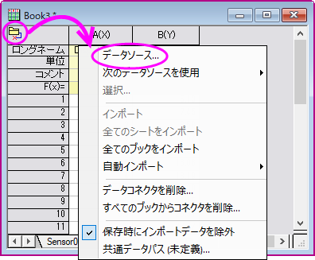
- 使用しないデータコネクタを非表示にするには、データ：ファイルに接続：カスタマイズ...を選択し、未使用のコネクタのチェックを外します。
- Originにインストールされていないファイル形式のデータコネクタは、データ: ファイルに接続: 新規追加...をクリックして利用できます。新しいデータコネクタが データ メニューに追加されます。
- 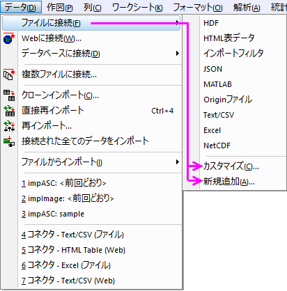
 | †Originは、 データ：Webに接続によってインポートされたデータを、LabTalkのシステム変数 @CFDTとファイルサイズで決定された期間キャッシュします。デフォルトでは、10MBのファイルの場合キャッシュされたデータを24時間保存します。つまり、24時間以内に再インポート（つまり、Webファイルに再接続）した場合、最初のインポートでキャッシュされたデータが使用されます。24時間経過後、この10MBのファイルに再インポートすると、キャッシュがクリアされ、データが新たにインポートされます。このキャッシュに関する動作を制御する方法については、以下のトピックを参照してください。
|
データソースファイルパス
データコネクタアイコンは、次の5つの状態のいずれかで表示されます。
- データソースが接続されると、アイコンは次のようになります。
- シート内のデータのロックが解除されて編集できるようになると（コネクタメニューまたはLabTalkシステム変数@IPDC=0)のいずれかで）、アイコンは次のようになります。
- データソースのインポートが保留中の場合、アイコンは次のようになります。
- 接続されたブックに新しいシートが追加されると、空のコネクタがシートに追加され、アイコンは次のようになります
- データソースが実行可能でなくなった場合（データソースが移動された場合など）、アイコンは次のようになります。
- シートがすべての編集に対して保護されている場合 (ワークシート保護)、コネクタメニューは無効になり、アイコンは次のようになります。

接続の状態に関係なく、コネクタアイコンをクリックし、データソースファイルパスと共通データパスを使用して、Originファイルとソースデータ間の接続を維持できます。
- 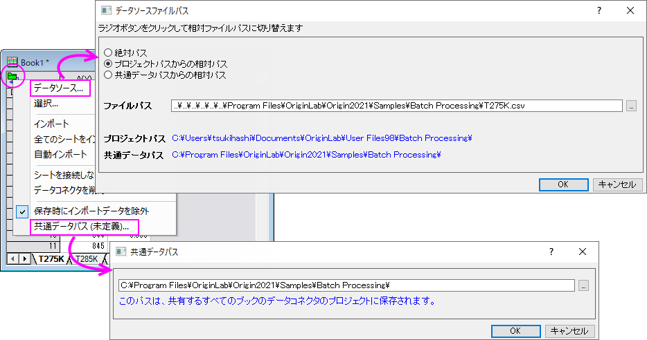
- プロジェクトパスからの相対パス: ：データがプロジェクトファイルの下のフォルダに保存されている場合は、データソースファイルへのパスをプロジェクトパスからの相対パスに設定できます。その後、プロジェクトとデータソースを一緒に移動しても、それらの相対パスは維持されます。ネットワーク上の別の場所からプロジェクトファイルを再度開くときに、パスの修正は必要ありません。
- 共通データパスからの相対パス：データソースが何らかの共通パスの下にある場合は、データソースファイルパスを共通データパスからの相対パスに設定できます。その後ファイルを移動した場合は、共通データパスを再確立してからすべてのブックをインポートを選択します。
データナビゲータ
データナビゲータは、Excel、MATLAB、Originプロジェクトなどの複数ページ/複数変数のファイルに接続したときに、ブックに自動的に追加される折りたたみ可能なパネルです。
- 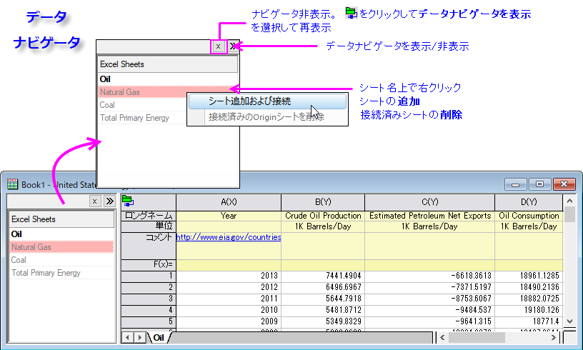
- Originは最初のシートからデータをインポートし、他のシートを淡色表示にします。
- 淡色表示されたシートを右クリックするか、CtrlキーまたはShiftキーを押しながら複数のシートを選択してから、シート追加および接続を選択します。
- ファイル名はブックのロングネームに割り当てられ、シートは元のシート名がシートの名前に割り当てられます。
- 接続されたシートは、現在のOriginワークブックから削除できます。
データコネクタとドラッグアンドドロップ
データ: ファイルに接続にあるファイルタイプでドラッグアンドドロップがサポートされています。
- 単純なヘッダ情報（列名と単位のみなど）を持つファイルの場合、データコネクタが追加され、インポートフィルタなしでファイルが適切に解析されます。
- ヘッダ情報がワークシートのデータ部分に含まれる場合など、適切に解析されないファイルの場合は、インポートウィザードを使用してOriginのインポートフィルタファイル(*.oif)を作成することを検討してください。
- インポートフィルタは、データファイルフォルダ、User Files\Filtersフォルダ、現在のウィンドウのいずれかに保存できます。データのインポートにテンプレートを使用する場合は、ウィンドウにフィルタを保存できます。それ以外の場合、フィルタファイル（* .oif）はデータファイルフォルダまたは\User Files\Filtersに保存することで使用可能です。
Text/CSVに接続
CSVファイル
データコネクタを使用して、ローカルまたはWebに保存されたテキストファイル（TXT、DAT、CSV）をインポートできます。データコネクタ機能は、これらのファイルタイプで適切に機能し、Originの古いX-Functionベースのインポートルーチンに関連する問題の一部を簡素化し、場合によっては排除します。たとえば、日時データのインポートでは、常に日時列は手動で構成する必要がありました。コネクタを使用すると、日時データが標準の簡単に認識できる形式である場合、その構成は自動的に行われます。
ローカルドライブまたはLANドライブ上のファイルに接続するには：
- ワークブックをアクティブな状態で、メニューからデータ：ファイルに接続： Text/CSVを選択します。
- ファイルを参照して選択します。
- CSVインポートオプションを設定します。多くの場合、デフォルトを受け入れるだけでファイルがきれいにインポートされるため、テストとして、デフォルトを変更せずにデータをインポートしてみてください。結果が良くない場合は、インポートを再実行してデフォルト設定を変更します。他のオプションボタン（OKの左）をクリックするとオプションを利用できます。

|
このミニチュートリアルでは、Text/CSVコネクタを使用して、日時コンポーネントを含むテキストファイルをインポートします。古いOriginのインポート方法では日時データがテキストとして扱われ、ユーザーは手動で日時列をインポート後の日付に設定する必要がありましたが、Text / CSVコネクタはインポート時にワークシート列を自動的に構成できます。
- 新規ワークブックボタン
 をクリックし、データ:ファイルに接続:Text/CSVを選択します。 をクリックし、データ:ファイルに接続:Text/CSVを選択します。
- <Origin Program>\Samples\Import and Export\フォルダを参照し、Date with higher precision.dat.を開きます。
- CSVインポートオプションダイアログの設定はデフォルトのままにして、 OKをクリックします。データがワークブックにインポートされます。
- 列Aヘッダをクリックして列を選択し、右クリックして列プロパティを選択します。フォーマットは自動的に日付に設定され、表示はカスタムに設定され、カスタムフォーマットはカスタム表示に表示されることに注意してください。
- 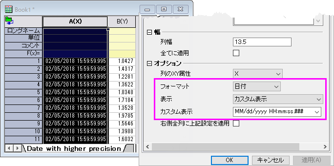
|
|
|
このミニチュートリアルでは、データコネクタを使用して複数のファイルをインポートします。これらの同じ構造のファイルには、保持したいメタデータの複数の行があります。したがって、インポートフィルタを使用して作られたインポートフィルタファイルを使用して、ファイルをインポートし、ファイルメタデータを各ワークシートの複数の列ラベル行に書き込みます。そうすることで、（a）データコネクタを使用して複数のファイルをインポートする方法、および（b）以前のバージョンのOriginで開発されたインポートフィルタファイル (*.oif)を使用して、Originの新しいデータコネクタテクノロジーを使用してファイルをインポートする方法を確認できます。
- 新しいプロジェクトを開始し、ワークブックをアクティブにして、データ：複数ファイルに接続を選択します。
- files2dcダイアログボックスで、以下のように設定します。
- データコネクタ = インポートフィルタ
- ソース = 指定したファイル
- ファイル名 = <Origin Program>\Samples\Import and Export\S15-125-03.dat, S21-235-07.dat and S32-014-04.dat
- 同一ブック = 有効（チェックボックスをオンにすると、すべてのファイルが1つのブックになります）
- OKをクリックし、開かれたダイアログで、インポートフィルタ = データフォルダー：VarsFromFileNameAndheader.oif]を設定します。
- OKをクリックすると、3つのファイルがワークブックに別々のシートとしてインポートされます。
|
Web上のファイルに接続するには：
- データ：Webに接続
- ファイルのURLがある場合は、URLボックスに入力します。それ以外の場合は、ファイルタイプをText/CSVに設定し（オプションですが、最近使ったURLをフィルタリングするのに役立ちます）、最近使ったURLを直接クリックして、リストから選択します。
- 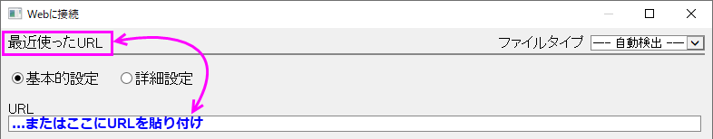
| CSVインポートオプション ダイアログを使用して、ローカルに保存されたファイルと同様、Webに保存されたファイルの部分インポートを指定できます。部分インポートボックスをチェックして、列および行インポートを定義するために使用しるシンタックスのガイドを開きます。
|
| Note：Text/CSVコネクタと一緒に操作する方法についての詳細は、次のOriginヘルプを確認してください。
ヘルプ: Origin: Originヘルプ > Text/CSVコネクタ
|
MATLABファイルに接続する
Originは、これまでのXファンクションベースのMATファイルインポートを引き続きサポートしていますが、データコネクタにはローカルに保存されたMATLABファイルとWebに保存されたMATLABファイルの両方のインポートにいくつかの利点があります。
- ルートレベルでMATLABファイルに接続すると、すべての変数がOriginの行列オブジェクトとして行列シートに追加されます。
- スライダーが追加され、シート内のOrigin行列オブジェクトをめくることができます。ミニツールバーのボタンスライダーまたはサムネイルを使用して、スライダーとサムネイルを切り替えることができます。
- また、コネクタは、折りたたみ可能なデータナビゲータパネルをウィンドウに追加します。変数を個別のシートとして追加する場合は、データナビゲータリストを右クリックして追加できます。
- 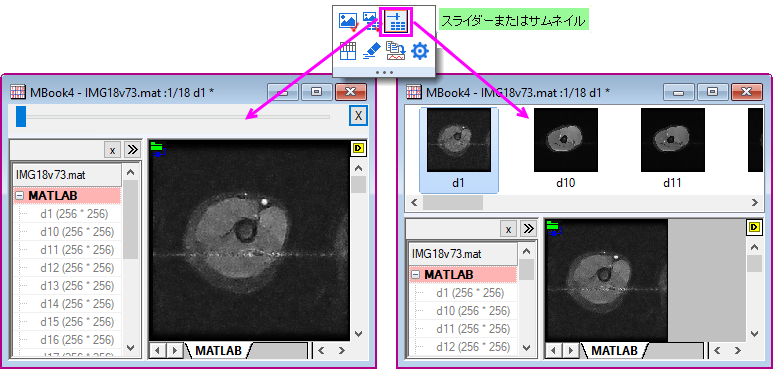
MATLABファイルに接続するには：
- ワークブックまたは行列ブックをアクティブにして、データ: ファイルに接続: MATLABまたはデータ: フWebに接続をクリックして、.matファイルへのURLを入力します。
- インポートする変数を選択し（ブラウザの下部パネルに追加します）、OKをクリックします。
| Note：JSON/MATLABコネクタと一緒に操作する方法についての詳細は、次のOriginヘルプを確認してください。
ヘルプ: Origin: Originヘルプ > JSON/MATLAB
|
NetCDFファイルとシェープファイルに接続する
NetCDFファイル形式は、多次元の科学データを共有するために使用されます。主に気候科学で広く使用されています。シェープファイルは通常、地理的境界やその他の地理空間データを格納するために使用されます
- 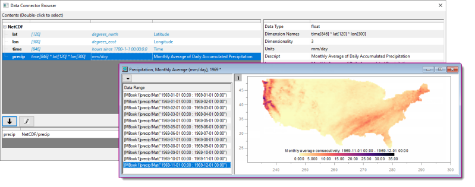
NetCDFファイルに接続するには：
- ワークブックまたは行列ブックをアクティブにして、データ: ファイルに接続: NetCDFまたはデータ: Webに接続をクリックして、.ncファイルへのURLを入力します。
- インポートする変数を選択しブラウザの下部パネルに追加します。
- 必要に応じてインポートオプション（鉛筆ボタン）を調整してOKボタンを2回クリックします。
- ワークブックがアクティブであるが、変数に行列ブックが必要な場合は、アクティブなワークックに新しい行列ブックまたは埋め込み行列ブックを追加するように求められます。
シェープファイルに接続するには：
- ワークブックまたは行列ブックをアクティブにして、データ: ファイルに接続: Shapefileをクリックして.shpファイルを選択します。
- （オプションで）エンコーディングと属性をロードやWGS84に変換を指定し、OKをクリックします。
| Note：NetCDFコネクタと一緒に操作する方法についての詳細は、次のOriginヘルプを確認してください。
ヘルプ: Origin: Originヘルプ > NetCDFコネクタ
|
クラウドドライブに接続
MS OneDrive または Googleドライブに保存されているOrigin、MS Excel、ASCIIファイルに接続可能です。アカウント認証後、ローカルファイルへの接続と同じようにクラウドファイルへの接続が可能です。
- ワークブックをアクティブにして、データ：クラウドに接続をクリックします。ブラウザが開いたらファイルを選択します。
- 必要に応じてブラウザのドロップダウンでクラウドサービスやアカウントの選択を行います。
- 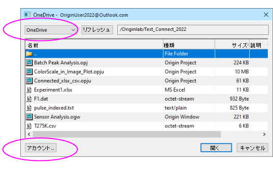
- ファイルを選択して、開くをクリックします。
初めてクラウドアカウントに接続するときは、アカウントの確認が必要です。Originは一時ファイルを使用して、クラウドアカウントとローカルコンピュータ間でデータにアクセスして転送します。それ以外の情報の通信は実行されません。
Excelデータを操作する
ExcelOriginでExcelデータを扱う場合、複数の方法があります。
- Excelのデータをクリップボードにコピーして、そのデータをOriginに貼り付けるまたはリンク貼り付けできます。
- データコネクタを使用して、（1）データ：ファイルに接続：Excelをクリックするか、（2）標準ツールバーのボタン
 をクリックするか、（3）ExcelファイルをOriginワークスペースにドロップすることでローカルExcelファイルをインポートできます。
をクリックするか、（3）ExcelファイルをOriginワークスペースにドロップすることでローカルExcelファイルをインポートできます。
- データ：Webに接続：Excelをクリックすると、データコネクタを使用してWebからExcelデータをインポートできます（以下、参照）。
- Originの古いX-Functionベースのルーチンを使用して、データ：ファイルからインポートをクリックすると、ローカルのExcelファイルをインポートできます。Excelコネクタ対応のため、最近このオプションは非表示になりましたが、使用したい場合は、Originヘルプファイルのこのセクションを参照してください。
OriginでExcelを操作する際の注意事項
- Originは.xls, .xlsx または .xlsmをインポート可能です。
- Excelコネクタを使ってデータをインポートする場合、コネクタアイコン
 をクリックしてインポートを選択することで、いつでもOrigin上のデータを更新できます。また、Excelに接続したOriginプロジェクトを開いたときもExcelデータを再インポートします。
をクリックしてインポートを選択することで、いつでもOrigin上のデータを更新できます。また、Excelに接続したOriginプロジェクトを開いたときもExcelデータを再インポートします。
- 以前のXファンクションimpMSExceベースの機能を使用してインポートする場合、特定のファイルインポート情報がワークブックに保存されます。ExcelファイルをOriginのワークブックにインポートした後は、標準ツールバーの再インポート ボタンを使用して、更新されたExcelファイル（複数のシートを含むものも含む）をOriginのワークブックに再インポートできます。
- Originは、あるExcelブックを別のExcelブックに動的にリンクすることや、Excelの数式を認識、変換などはサポートしていません。
| ExcelコネクタとimpMSExcel ルーチンは、Excelファイルの部分インポートをサポートしています。詳細は、Originヘルプの部分インポートと再インポートを参照してください。
|
Excelファイルに接続する
Originのデータコネクタは、Originプロジェクトの外部データファイルとのライブリンクを作成します。
- ローカルのファイルに接続するには、データ：ファイルに接続をクリックします（または標準ツールバーの ボタンをクリックします）。
- Webに保存されたファイルに接続するには、データ：Webに接続をクリックします。
- Originのワークブック1つにつき、Excelファイル1つを接続できます。
- ファイルが複数シートファイルの場合、最初に1つのシートに接続する必要があります。これにより、データナビゲータパネルが開き、必要に応じて追加のページに接続できます。
- すべてのシートが同じ構造になっている場合、最初のシートが適切に解析されれば（たとえば、ヘッダ情報が正しく処理される）、特に調整せずに追加のシートを接続できます。
- 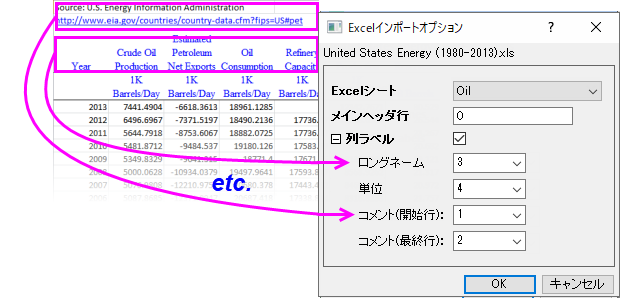
|
|
- 新規ワークブックボタンをクリックして新しいワークブックを作成し、データ：ファイルに接続：Excelを選択します。
- <Origin Program>/Samples/Import and Export/United States Energy (1980-2013).xlsを検索し、開くをクリックします。
- Exceｌインポートオプションダイアログの設定はデフォルトのままにして、 OKをクリックします。
- ブックの左側に表示されるデータナビゲータパネルで、Ctrlキーを押しながら他の3つのシートを選択し、右クリックしてシートの追加と接続を選択します。残りのシート（Natural Gas、Coal、およびTotal Primary Energy）はワークブックにインポートされます。接続されていないシートのサイズが大きい場合は、必要に応じて、一度に1枚ずつ接続することを選択できます。
|
ファイルからインポート
ASCIIデータ
データ: ファイルからインポートの下にリストされているインポートルーチンは、データコネクタより前のものです。ファイルからインポート機能は今後開発されることはありませんが、利用できます。
また、この表にあるファイルの種類によっては、コネクタが存在しない場合があります。データコネクタがない場合は、データ：ファイルからインポート機能を使用する必要があります。
| 標準ツールバーの単一ASCIIのインポートボタン で、データ:ファイルに接続: Text/CSVルーチンが呼び出されるようになりました。impASCルーチンについては、次のセクションを参照してください。 で、データ:ファイルに接続: Text/CSVルーチンが呼び出されるようになりました。impASCルーチンについては、次のセクションを参照してください。
|
impASCでASCIIファイルをインポート
- データ：ファイルからインポート：複数ASCII...（
 ）この方法は、一般に、単純な構造のテキストファイルをインポートするのに十分です（単一ファイルまたは複数ファイルのインポートで機能します）。この2つのメソッドは、通常、一般的に使用される区切り文字とシンプルなヘッダ構造を持つファイルを調整なしで処理可能です。
）この方法は、一般に、単純な構造のテキストファイルをインポートするのに十分です（単一ファイルまたは複数ファイルのインポートで機能します）。この2つのメソッドは、通常、一般的に使用される区切り文字とシンプルなヘッダ構造を持つファイルを調整なしで処理可能です。
- ファイルのインポートを調整する必要がある場合は、ASCIIダイアログでファイルを選択するときにオプションダイアログの表示チェックボックスを選択します。これにより、impASCダイアログボックスが開き、ファイルインポート時の処理方法を調節可能です。
- 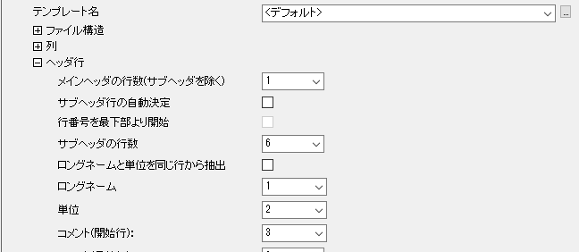
インポート設定を保存
impASCダイアログでインポート設定を調整した場合、次の2通りの方法でこれを保存できます。
ワークシートテンプレートを使用してインポート設定を保存すると、移植性が向上します（テンプレートは同僚と簡単に共有できます）。テーマとしてインポート設定を保存すると、impASCダイアログボックスでインポートするときにインポートオプションの組み合わせをいくつでも呼び出せるという利点があります。
テーマとテンプレートの詳細については、このユーザーガイドの後の章にあるOriginのカスタマイズをご覧ください。またに、下の「詳細情報」にある、トピックスもご覧ください。
| データメニューの下部にあるリストからカスタムインポートテーマをすばやく読み込むことができます。また、データ：ファイルからインポート：ファイルの種類の追加／削除と選択して開く、インポートメニューのカスタマイズダイアログを使用して、保存したユーザテーマをデータ：ファイルからインポートで表示されるサブメニュー内に表示させることができます。
|
サードパーティ製データ
特定のサードパーティ製のデータコネクタが存在しない場合でも、Originの古いX-Functionベースのインポートルーチンを使用できます。これらには、pClamp、NI TDM、NetCDFなど、広く使用されている含む幅広いサードパーティ製データが含まれます。すべてのX-Functionベースのルーチンと同様に、サードパーティのファイルインポートオプションをカスタマイズし、ワークシートテンプレートを使用して、または後で使用するためのダイアログテーマとして設定を保存できます。サポートされている他のファイルタイプと同様に、ドラッグアンドドロップでサードパーティのファイルをインポートできます。
pClamp
HDF5
SPC
MATLAB
JCAMP
| ファイルの種類
|
方法
|
より詳細をご覧いただくには次を参照してください：
ヘルプ：Origin：Originヘルプ ＞ データのインポートとエクスポート
|
|
Thermo (SPC, CGM)
pCLAMP (ABF, DAT, AB?)
Princeton Instruments (SPE)
音声(WAV)
NetCDF (NC)
CDF (CDF)
HDF5 (H5, HE, HDF5)
NI DIAdem (DAT) National Instruments
Famos (DAT, RAW)
ETAS INCA MDF (DAT, MDF)
IgorPro (PXP, IBW)
Prism (PZFX, XML)
MATLAB (Mat)
Minitab (MTW, MPJ)
KaleidaGraph (QDA)
SigmaPlot (JNB)
MZXML(mzData, mzXML, mzML, imzML)
EarthProbe (EPA)
EDF (EDF, BDF, REC, HYP)
Somat SIE (SIE)
JCAMP-DX (DX, DX1, JDX, JCM)
HEKA (DAT)
SPSS (SAV)
BRUKER OPUS
SAS (sas7bdat)
Tektronix (ISF)
Data Translation (DCF, HPF)
バイナリ２D配列 (IMG, B2D)バイナリ２D配列、インポート
画像画像、インポート
|
データ：ファイルからインポート
|
＞ サードパーティ製ファイルのインポート
|
| Note:デフォルトでは非表示になっているサードパーティ製ファイルフォーマットもあります。追加するには、データ：ファイルからインポート：ファイルの種類の追加/削除...を選択します。これにより、インポートメニューのカスタマイズダイアログボックスが開き、ファイルからインポートメニューに表示するファイルの種類を選択できます。もし、メニューコマンドの間に区切りが必要な場合、このダイアログの右側のパネルで右クリックし、区切りの追加を選択します。区切りを削除するには、右側のパネルで区切りをダブルクリックします。
|
ドラッグ&ドロップ、インポート
| 特定のファイルタイプ（つまり、上記の表にリストされているもの）にデータコネクタが存在しない場合、ドラッグアンドドロップのサポートは、フィルタマネージャーダイアログを使用してファイル拡張子によって管理されます。メインメニューから、環境設定：基本設定：インポートフィルタマネージャ...をクリックします。
|
| Note：サードパーティー製ファイルと一緒に操作する方法についての詳細は、次のOriginヘルプを確認してください。
ヘルプ：Origin：Originヘルプ ＞ サードパーティ製ファイルのインポート
|
インポートウィザード
上記2つの方法では十分に扱えない、複雑な構造のASCIIファイルをインポートする場合、インタラクティブなインポートウィザード を使用します。任意のヘッダ部とその後にバイナリデータが続くような構造を持つバイナリファイルはOriginのインポートウィザードでインポートします。バイナリデータインポートウィザード
ASCIIデータでインポートウィザードを使用するもう1つの利点は、同じ名前のデータファイルのグループを対象とするインポートフィルタを作成できることです。これは、ファイルに特定の方法で処理する必要のあるメタデータが含まれている場合に役立ちます。作成したフィルタは、ドラッグアンドドロップによるインポート操作で使用でき、データ：ファイルからインポートメニューに追加できます。環境設定：インポートフィルタ・マネージャメニューでインポートフィルタの閲覧や編集が可能です。
インポートウィザードを開くには：
- データ：ファイルからインポート：インポートウィザードを選択するか、標準ツールバーにある
 ボタンをクリックします。
ボタンをクリックします。
- Text/CSVコネクタでうまく処理されないASCIIファイルをインポートするためにOriginインポートフィルタファイル(*.oif)を作成します。
- Webページなどにあるデータをクリップボードにコピーしてインポートします（下記を参照ください。）
- インポートファイル名やヘッダから変数を抽出します。
- データを解析するためのカスタム区切り記号と日付形式を指定します。
- インポートデータに対して実行するLabTalkスクリプトを含めます。
| Note: 詳細は、次のヘルプファイルをご覧ください。
ヘルプ：Origin ヘルプ > データのインポートとエクスポート > インポートウィザード
|
クリップボードのデータをコピー/貼り付け
Clipboard Data, ImportingOriginでデータを取得するひとつの方法として、クリップボードにコピーしたデータをOriginに貼り付ける、という方法があります。 これで、Excelワークブックの一部分を選択し、Originのワークブックに貼り付けるという簡単が可能です。しかし、クリップボードのデータは、Originへ正しくデータを貼り付けることができるように、フォーマットされた配列、または区切りではありません。ここではいくつかの注意点があります。
- ExcelからコピーしてOriginに貼り付けたデータは、Excelで表示されている小数点桁数にかかわらず、完全精度で貼り付けられます。
- ヘッダ行のあるExcelファイルの場合、クリップボードのデータをOriginの1行目（ラベル行でない）に貼り付けた後、行を選択して右クリックし、開くショートカットメニューから、ロングネームに設定、単位として設定、コメントとして設定を使用して、ヘッダ情報をタグ付けすることができます。
- また、Webからコピーされたデータは様々な方法でフォーマットされていることがあります。きれいにデータを貼り付けるためには、いくつかの操作を試す必要があります。もし、単にコピーアンドペーストするだけではうまくデータを取得できない場合、インポートウィザードを使用して試すことができます。インポートウィザードでは、クリップボードのデータをインポート処理するためのインタラクティブなインターフェースと、同じ形式のデータに対して適用できるインポートフィルタ（.oif）の保存機能を提供します。詳しい情報は、チュートリアルのインポートウィザードを使ってクリップボードデータをインポートするをご覧ください。
- 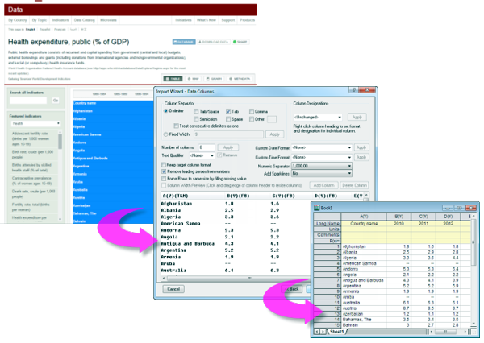
Originファイルをクエリして選択的にデータをインポート
インポートに先立ってデータコネクタブラウザでSQL同様のクエリの指定により、外部Originファイルからデータ列を選択的にインポートできるようになりました。

Originコネクタを使ってOriginファイルを選択的にクエリ
- ワークシートをアクティブにして、データ：ファイルに接続または、Webに接続を選択します。
- Originファイルを参照して、開くをクリックします。データコネクタブラウザが開きます。
- クエリを選択ボタンをクリックします。
- クエリを選択ダイアログでクエリを入力し、OKボタンをクリックします。
クエリで指定した通りに、アクティブワークブックに選択的にデータがインポートされます。
一般的なキーワード
| キーワード
|
説明
|
| _SName
|
ショートネーム。例：_SName, Sheet_SName
|
| _LName
|
ロングネーム。例：_LName, Book_LName
|
| _Comments
|
コメント。例：_Comments, Sheet_Comments
|
| Column_D1
|
列ユーザ定義パラメータで、1 はパラメータ番号
|
| Column_[Name]
|
列ユーザ定義パラメータで、[Name] はスペースを含めたパラメータ名
|
サンプル:
Select Column from Project where _SName == "A";
Select Column from Project where _Comments like "S*3";
Select Column from Project where (Column_P1 like "*y*" and Column_D1 > 3);
Select Column from Project where Sheet_SName like "Trial*";
Select Column from Project where (Book_SName like "Book*" or Book_LName like "*fit*")
詳細情報は、ユーザガイド: OriginコネクタでSQLクエリを使用するサンプルを参照してください。
データベース
SQLデータ
Originは、ODBCとOLE DBによるデータベースへの接続をサポートしています。さらに、Originには、接続文字列を追加し、Origin内でSQLクエリを生成するためのシンプルなSQLエディタが含まれています。
SQLデータをインポートするには、データ：データベースに接続メニューコマンドから開始します。
- 開くは、保存された接続（ODS）またはクエリ（ODQ）ファイルを参照して開くことができます。
- 新規作成は、データベースコネクタダイアログを開きます。
- 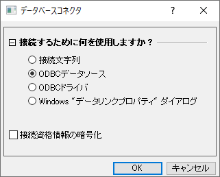
- 接続文字列: 指定されたデータソース（ODBCまたはOLE DB）のテキストベースの接続文字列がすでにある場合は、これを選択します。
- ODBCデータソース: ODBC データ ソース アドミニストレーターアプレットを使用してODBCデータソースを定義している場合は、これを選択します。
- ODBCドライバ: ODBCドライバを使用していて、このデータコネクタインスタンスに適用可能なデータソースを作成したい場合は、これを選択します。
- Windows"データリンクプロパティ"ダイアログ: OLE DBベースのデータソースなどをSQLサーバーまたはアクセスクライアントライブラリとして使用している場合は、これを選択します。
他の事項：
- LabTalkシステム変数@IPDBを使ってインポートされる範囲を制御できます（0 = 保護なし、1 = 保護するが再配置許可、2 = 保護）。
- 他のコネクタと同様に、OPJU/OGWUとして保存時にインポート（データ）を除外するオプションがあります。
- 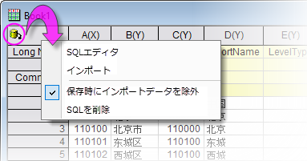
デジタイザ
詳細に探求したい、いくつかのデータのグラフ画像のみある場合、デジタイザを使って、イメージファイルをインポートします。そして、Originの分析およびグラフ作成ツールを使って、イメージを検定や再プロット可能な数値データに変換して、プロットをデジタイズします。
- 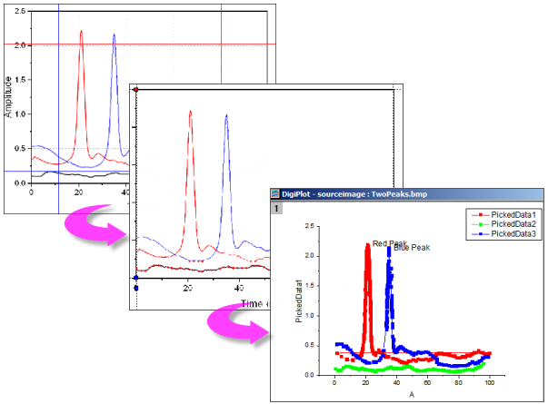
- 汎用的な画像形式をインポートします。
- 開始と終了の値を指定して、インポートしたイメージの回転、ノイズの除去、スケール測定を行います。
- 手動または自動で曲線上のポイントを指定します。
- 必要に応じて、手動で曲線の編曲点を追加します。
- デジタイズしたくない点は、インタラクティブに削除します。
- 直交、極座標、三角座標をサポートしています。
デジタイザを開くには
- 標準ツールバーのイメージのデジタイズボタン
 をクリックするか、メインメニューの ツール：デジタイザ...を選択します。
をクリックするか、メインメニューの ツール：デジタイザ...を選択します。
インポートデータを除外してOriginファイルを保存する
今までの方法でも、Originデータをデータなしで保存することはできました。テンプレートとして保存...、ワークブックを分析テンプレートとして保存、プロジェクトをデータなしで保存は、ファイルと設定や操作を維持しながら、データのない起源ファイルを保存するための3つのオプションでした。
また、インポートされたデータなしでOriginファイルを保存することができるようになりました。これは、大きなデータファイルを扱うユーザにとっては特に便利なオプションです。ファイルを使ってそのデータを保存すると、パフォーマンスが低下したり、ディスク容量が無駄になったりする可能性があります。
- デフォルトでは、インポートファイルサイズが500kBを超える場合、データコネクタを使用してインポートされたデータはブックと一緒に保存されません。各ブックには保存時にインポートデータを除外チェックマークがあり、ブック内の任意のページのチェックマークを外すと、インポートされたすべてのデータがブックと共に保存されます。
- 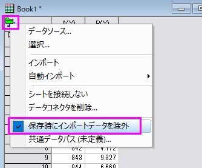
- プロジェクト内のどのブック（データコネクタがないものも含む）でも、インポートデータを除外するオプションを選択できます。ウィンドウのタイトルバー上で右クリックしてプロパティを開き、ダイアログ下部のプロジェクト保存時にインポートデータを除外ボックスにチェックします。
- 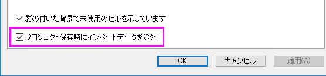
保存時にデータを除外するという動作は、いくつかの重要な点でテンプレートファイルの保存とは異なります。
- インポートされたデータを除外しても、インポートされたデータに対する分析操作の結果（フィット結果、統計分析、設定値の計算など）の結果はすべて保存されます。インポートされたデータやインポートされたデータのグラフは保存されません。
- データをインポートせずに保存したブックは、元のデータソースへの「ライブ」リンクを保持します。データコネクタを含むブックの場合は、データコネクタアイコンをクリックし、インポート（アクティブシート）またはすべてインポート（ブック内の全てのシート）をクリックします。標準のファイルインポートに使用されるブックの場合は、空のブックをアクティブにして、データ：直接再インポートをクリックします。またはインポートツールバーの再インポート（ダイアログなし）ボタンをクリックします（次を参照）。
データファイルの再インポート
再インポート
データメニューには、同じファイルを繰り返しインポートするための2つのインポートコマンドがあります（ファイルパスと名前は同じである必要があります）。
- 直接再インポート: デフォルトでOriginのワークシートや行列シートにファイルをインポートする場合、ファイルパスと名前を含むパラメータは、シートに保存されています。定期的に更新される外部データファイルがある場合、または標準ファイルをワークシートに再ロードする場合は、インポートダイアログを開かずに直接再インポートできます。
- 再インポート...: このメニューコマンドで、ファイルタイプに必要なXファンクションのダイアログボックスを開き、再インポート前にインポートオプションを設定することができます。
|
Note:
- 一度に再インポートできるのは1つのファイルだけです。 これら2つのメニューコマンドのいずれか1つを使うと、アクティブワークシートあるいは行列シートと結びついたファイルのみがインポートされます。 選択したデータを複数のファイルからインポートすると、再インポートは失敗します。
- ASCIIファイルをインポートウィザードを使ってインポートしてデータ: 再インポート...を選択する場合、インポートウィザードの代わりにimpASCダイアログが開きます。
- 再インポートは、インポートウィザードを使ったバイナリまたはユーザ定義データタイプでは操作できません。
|
クローンインポート
クローンインポートは、インポート（および、オプションで関連する分析操作）を「モデリング」し、最初のファイルに対して行われた内容を一連の類似ファイルに適用する機能です。アクティブなブックにインポートされたデータと関連する操作が含まれている限り、クローンを作成できます。この意味で、クローン作成は分析テンプレートの作成に似ていますが、いくつか制限があります（たとえば、バッチ処理ツールでは使用できません）。
クローンインポートは、データコネクタとXファンクションベースのインポート方法の両方でサポートされています。簡単なチュートリアルで、クローンインポートと分析操作の基本について説明します。
|
|
- 新規ワークブックボタンをクリックし、新しいワークブックを作成します。
- ファイルエクスプローラーを使用して、<Origin Program>\Samples\Curve Fitting フォルダーを参照し、Sensor01.datというファイルを見つけます。このファイルを新しいワークブック内にドラッグアンドドロップします。Text/CSV コネクタを使用して.datファイルをインポートします。
- 列Bのヘッダをクリックして列を選択し、散布図ボタン
 をクリックして散布図を作成します。 をクリックして散布図を作成します。
- XまたはYグラフの軸スケールをクリックし、表示される 軸 ダイアログボックスで スケール タブをクリックし、Ctrlを押して、左側のパネルで水平軸アイコンと垂直軸アイコンの両方を選択します。再スケール を 自動 に設定して、OKをクリックします。
- グラフがアクティブな状態で、 解析 ： フィット ： 線形フィット をクリックして、ダイアログボックスを開きます。再計算を自動に変更し、他の設定はデフォルトのままOKボタンをクリックしてフィットを実行します。確認メッセージに「いいえ」と答え、OKをクリックします。
- ワークブックのタブを1つ右クリックし、グラフをシートとして追加をクリックします。これにより、線形フィットの結果を含む散布図がワークブックのページとして追加されます。
- 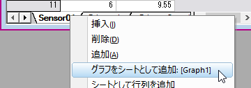
- Sensor01.datのデータがアクティブな状態で、インポートツールバー上のクローンインポートボタン
 をクリックします。 をクリックします。
- もう一度、<Origin Program>\Samples\Curve Fitting フォルダを参照し、CtrlキーまたはShiftキーを押して、Sensor02.datからSensor07.datファイルを選択します。ファイルの追加をクリックし、OKをクリックします。元のブックをインポートおよび分析操作のモデルとして使用すると、SensorファイルはText / CSV コネクタを使用してインポートされ、1つずつ処理されます（すべて完了するまでに数秒かかる場合があります）。
- 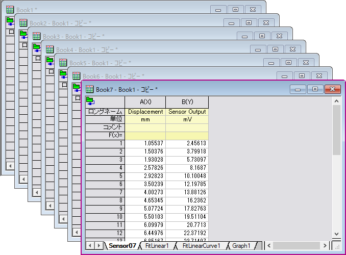
|
参考